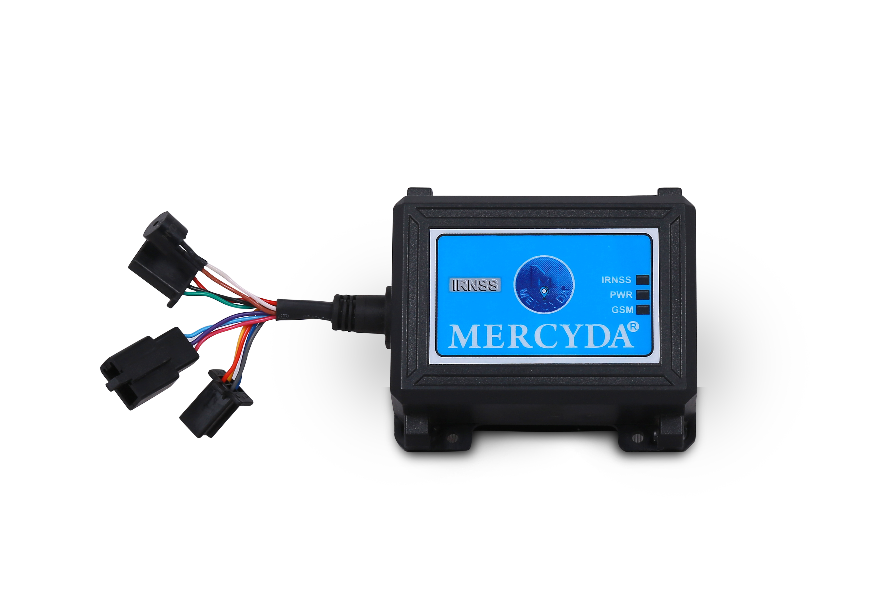

Turn raw vehicle data into action: real-time tracking, driver safety analytics, fuel and maintenance optimization — all on a single secure platform designed for scale.
Complete vehicle tracking and safety monitoring solution with intelligent alert system

Designed for long-term fleet monitoring, MERCYDA VTS-140 A – 2G delivers dependable performance, intelligent alerts, and robust vehicle safety features.
View Product DetailsAdvanced tracking, alerts, safety intelligence and service tools available via Web, Android & iOS applications
Compact, rugged and regulation-ready 4G LTE vehicle tracking solution for fleet management and asset monitoring

MERCYDA VTS-140 A – 4G LTE is engineered for uninterrupted connectivity, precise GNSS tracking, and intelligent alerts. Designed to operate reliably in harsh automotive conditions, it ensures compliance, security, and operational efficiency for modern fleets.
View Product DetailsHigh-performance tracking, intelligent alerts, and secure data communication for professional fleet operations
Voice-enabled, rugged 4G LTE tracking and monitoring solution for fleet management, vehicle security, and real-time communication

MERCYDA GLS-4G+ is a high-performance GNSS-based tracking device designed for fleet management, vehicle security, and voice-enabled remote monitoring. With integrated audio features, wide-voltage automotive support, and a rugged IP67 enclosure, it delivers reliable operation across diverse vehicle types and environments.
View Product DetailsIntelligent tracking, audio communication, and rugged reliability for professional fleet operations
Industrial-grade 4G LTE tracking solution engineered for harsh environments, advanced vehicle diagnostics, and secure fleet intelligence

MERCYDA GLS 4G Rugged is a powerful 4G LTE vehicle tracking device designed for mining, construction, logistics, and industrial fleets. With wide-voltage support, CAN & OBD-II integration, advanced fuel monitoring, and an IP67 rugged enclosure, it delivers unmatched reliability in the harshest operating conditions.
View Product DetailsBuilt for heavy-duty vehicles with advanced diagnostics, fuel intelligence, and secure connectivity
Advanced capabilities that set our solution apart from standard telematics platforms
Real-time vehicle tracking through MercydaTrack mobile application available on iOS and Android platforms.
3 months of historical data with detailed reports and geolocation visualization across web and mobile platforms.
Real-time alerts for overspeeding, emergency situations, battery disconnect, and ignition status changes.
Integrated hooter for emergency alerts and overspeed warnings, plus speaker support for custom announcements.
Automatic renewal notifications with easy access to device activation, expiry, and installation dates.
Round-the-clock assistance via toll-free number and integrated ticket raising portal within the mobile app.
Find the nearest Mercyda service centers directly through the mobile application for quick assistance.
Dedicated ticket raising system for customers to report issues and track resolution status in real-time.